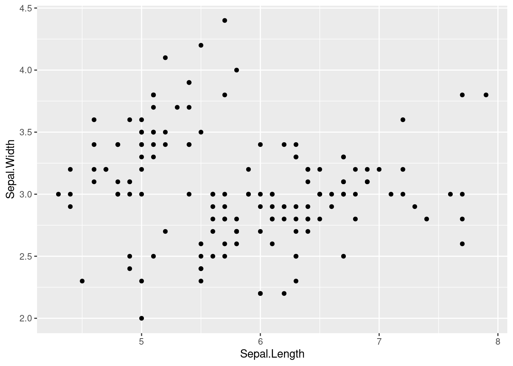

library(tidyverse)
data(iris)10 기본 플롯 시각화 (ggplot2)
이 튜토리얼에서는 R의 대표적인 시각화 라이브러리인 ggplot2와 관련된 기본적인 개념과 사용 방법을 다룹니다. 이를 통해 데이터 시각화의 기초 원리를 이해하고, 예제 데이터를 사용하여 다양한 유형의 그래프를 그려보는 연습을 하게 됩니다.
10.1 ggplot 기본
먼저 내장 데이터셋인 iris를 사용하여 기본적인 시각화 예제를 다뤄보겠습니다. ggplot2의 핵심 문법은 크게 축(axis)과 레이어(layer)로 나뉘며, 이 두 요소를 결합하여 원하는 시각화를 만들어갑니다.
10.1.1 axis (축 설정)
2차원 평면 그래프를 그리려면 데이터, 축, 레이어의 3가지 구성 요소가 필요합니다. 먼저 x축과 y축을 그리고, 레이어를 사용하여 해당 축에 정보를 넣습니다.
좀 더 자세히 설명하면,
데이터: 그래프에 표시할 정보입니다. 예를 들어, 시간에 따른 주식 가격, 온도 변화, 도시별 인구 수 등이 될 수 있습니다.
축: 그래프의 기준이 되는 선입니다. x축은 가로축, y축은 세로축을 나타냅니다. 각 축은 데이터의 범위를 나타내는 눈금과 단위로 이루어져 있습니다.
레이어: 데이터를 시각적으로 표현하는 방식입니다. 점, 선, 막대 등 다양한 형태의 레이어를 사용하여 데이터를 그래프에 나타낼 수 있습니다.
즉, 2차원 그래프를 그리려면 먼저 x축과 y축을 그리고, 데이터를 적절한 레이어 형태(점, 선, 막대 등)를 사용하여 표현하면 됩니다.
iris %>% # data what we used
ggplot(aes(x = Sepal.Length, y = Sepal.Width))
축 이름을 변경하고, 그래프의 제목도 추가해보겠습니다.
iris %>%
ggplot(aes(x = Sepal.Length, y = Sepal.Width)) +
xlab("sepal length") + ylab("sepal width") +
ggtitle("Iris flow and its characteristics")
10.1.2 레이어와 geom_x() 사용법
ggplot2에서 레이어(geom_x())는 그래프의 세부 요소를 지정합니다. 대표적인 종류는 다음과 같습니다:
ggplot2에서 레이어(geom_x())는 그래프의 세부 요소를 지정합니다. 대표적인 종류는 다음과 같습니다:
geom_x() 함수 |
내용 |
|---|---|
geom_point() |
산점도 (Scatter Plot) |
geom_line() |
선 그래프 (Line Plot) |
geom_smooth() |
추세선 (Trend Line) |
geom_histogram() |
히스토그램 (Histogram) |
geom_density() |
밀도 곡선 (Density Plot) |
geom_boxplot() |
박스플롯 (Boxplot) |
geom_bar() |
막대그래프 (Bar Chart) |
10.1.3 geom_point()로 산점도 그리기
이것은 가장 기본적인 산점도입니다. x축에는 Sepal.Length를, y축에는 Sepal.Width를 표시합니다. 이 경우 사용할 레이어는 geom_point()입니다.
좀 더 쉽게 풀어서 설명하면,
산점도: 두 변수 간의 관계를 점으로 나타낸 그래프입니다. 예를 들어, 키와 몸무게의 관계, 공부 시간과 시험 점수의 관계 등을 시각적으로 확인할 수 있습니다.
Sepal.Length: 꽃받침의 길이를 나타내는 데이터입니다.
Sepal.Width: 꽃받침의 너비를 나타내는 데이터입니다.
geom_point(): ggplot2 라이브러리에서 제공하는 함수로, 데이터를 점으로 표현하는 레이어입니다.
즉, 꽃받침의 길이(Sepal.Length)와 너비(Sepal.Width) 데이터를 사용하여, x축에는 길이, y축에는 너비를 표시하고, 각 데이터를 점으로 나타내는 산점도를 그리는 것입니다. geom_point() 함수를 사용하면 이러한 산점도를 쉽게 그릴 수 있습니다.
iris %>%
ggplot(aes(x=Sepal.Length, y = Sepal.Width)) +
geom_point()
산점도에 축 이름과 제목을 추가한 예제입니다.
iris %>%
ggplot(aes(x = Sepal.Length, y = Sepal.Width)) +
xlab("Sepal length") +
ylab("Sepal width") +
ggtitle(" Type of iris according to sepal lenght and width") +
geom_point()
더 자세히 알아보죠. 산점도 자체만으로는 해석이 부족할 수 있습니다. 이번에는 붓꽃 종류별로 다른 색상을 사용하여 표현해 보겠습니다. aes() 안에 color = Species를 추가하여 종류별로 색상을 지정하면 됩니다.
iris %>%
ggplot(aes(x = Sepal.Length, y = Sepal.Width,
color = Species)) +
xlab("Sepal length") +
ylab("Sepal width") +
ggtitle(" Type of iris according to sepal lenght and width") +
geom_point()
이렇게 하면 좀 더 나아 보이죠? 이제 붓꽃 종류별로 꽃받침 길이와 너비의 관계를 파악하기 위해 추세선을 추가해 보겠습니다. geom_smooth() 함수를 사용하면 됩니다. 또한, geom_line() 함수도 추가해 볼 수 있지만, 논리적으로 유용하지 않기 때문에 여기서는 생략합니다.
10.1.4 추세선 추가 (geom_smooth())
geom_smooth() 함수를 사용하면 데이터의 추세를 나타내는 선을 그릴 수 있습니다.
아래 코드는 붓꽃 종류별로 꽃받침 길이와 너비의 관계를 나타내는 추세선을 그립니다.
iris %>% #
ggplot(aes(x = Sepal.Length, y = Sepal.Width,
color = Species)) +
xlab("Sepal length") +
ylab("Sepal width") +
ggtitle(" Type of iris according to sepal lenght and width") +
geom_point() +
geom_smooth() 
geom_smooth() 함수에 method와 formula 옵션을 지정하여 선형 추세선이나 다항식 추세선을 추가할 수 있습니다. 아래 코드는 5차 다항식 추세선 (linetype 1)과 선형 추세선 (linetype 2)을 추가합니다. se = TRUE로 설정하면 추세선 주변에 신뢰 구간을 표시할 수 있습니다.
iris %>%
ggplot(aes(x = Sepal.Length, y = Sepal.Width,
color = Species)) +
xlab("Sepal length") +
ylab("Sepal width") +
ggtitle(" Type of iris according to sepal lenght and width") +
geom_point() +
geom_smooth(method = 'lm', formula = y ~ poly(x, 5), se = FALSE, linetype = 1) + # how abou se = TRUE
geom_smooth(method = 'lm', formula = y ~ x, se = FALSE, linetype = 2) 
10.1.5 패싯팅 (faceting)
하나의 그래프에 모든 데이터를 표시하면 복잡해 보일 수 있습니다. 이럴 때 facet_wrap() 함수를 사용하여 데이터를 여러 개의 작은 그래프로 나누어 표시할 수 있습니다.
iris %>%
ggplot(aes(x = Sepal.Length, y = Sepal.Width,
color = Species)) +
xlab("Sepal length") +
ylab("Sepal width") +
ggtitle(" Type of iris according to sepal lenght and width") +
geom_point() +
geom_smooth(method = 'lm', formula = y ~ poly(x, 5), se = FALSE, linetype = 1) +
geom_smooth(method = 'lm', formula = y ~ x, se = FALSE, linetype = 2) +
facet_wrap(Species~.)
위 코드는 붓꽃 종류별로 그래프를 나누어 표시합니다.
10.1.6 막대 그래프 geom_bar()
geom_bar() 함수를 사용하면 막대 그래프를 그릴 수 있습니다.
iris %>%
ggplot(aes(x = Species,
fill = Species)) +
xlab("Type of iris") +
ylab("Counts") +
ggtitle("Number of iris according to its types.") +
geom_bar()
filter() 함수를 사용하여 특정 조건에 맞는 데이터만 추출하여 시각화할 수 있습니다. 아래 코드는 꽃받침 너비가 3보다 큰 붓꽃의 종류별 개수를 막대 그래프로 표시합니다.
iris %>%
filter(Sepal.Width >3) %>%
ggplot(aes(x = Species,
fill = Species)) +
xlab("Type of iris") +
ylab("Counts") +
ggtitle("Number of iris according to its types.") +
geom_bar()
원형차트, (coord_polar() 함수를 사용하면 막대 그래프를 원형 차트로 변환할 수 있습니다.
iris %>%
filter(Sepal.Width >3) %>%
ggplot(aes(x = Species,
fill = Species)) +
xlab("Type of iris") +
ylab("Counts") +
ggtitle("Number of iris according to its types.") +
geom_bar() +
geom_bar(width =1) + coord_polar()
10.1.7 히스토그램 및 밀도 그래프 (geom_histogram(), geom_density())
geom_histogram() 함수는 히스토그램을, geom_density() 함수는 밀도 그래프를 그립니다. 아래 코드는 붓꽃의 꽃받침 길이 분포를 히스토그램과 밀도 그래프로 표시합니다.
iris %>%
ggplot(aes(x = Sepal.Length)) +
xlab("Sepal Length of Iris") +
ylab("density") +
ggtitle("Distribution of Sepal Length ") +
geom_histogram(aes(y = ..density..))+
geom_density()
aes() 함수 안에 fill = Species를 추가하여 붓꽃 종류별로 히스토그램과 밀도 그래프를 다르게 표시할 수 있습니다. 아래코드는, 붓꽃 종류별 꽃받침 길이 분포를 히스토그램과 밀도 그래프로 표시하고, 투명도를 조절하여 겹쳐 보이도록 합니다. color = Species는 점이나 선의 색상을 변경하는 반면, fill = Species는 히스토그램이나 막대 그래프의 내부 색상을 변경합니다.
iris %>%
ggplot(aes(x = Sepal.Length, fill = Species)) +
xlab("sepal length of iris") +
ylab("density") +
ggtitle("Distribution of sepal length of iris") +
geom_histogram(aes(y = ..density..), alpha = 0.3)+
geom_density(stat="density", alpha = 0.3) +
theme_minimal()
facet_wrap() 함수를 사용하여 붓꽃 종류별로 그래프를 나누어 표시할 수 있습니다. 아래 코드는 붓꽃 종류별 꽃받침 길이 분포를 히스토그램과 밀도 그래프로 표시하고, 종류별로 그래프를 나누어 표시합니다.
iris %>%
ggplot(aes(x = Sepal.Length, fill = Species)) +
xlab("sepal length of iris") +
ylab("density") +
ggtitle("Distribution of sepal length of iris") +
geom_histogram(aes(y = ..density..), alpha = 0.3)+
geom_density(stat="density", alpha = 0.3) +
theme_minimal() + # my favorit theme
facet_wrap(Species~.)
10.1.8 상자 그림 (geom_boxplot())
geom_boxplot() 함수를 사용하면 상자 그림을 그릴 수 있습니다. 위 코드는 붓꽃 종류별 꽃받침 너비 분포를 상자 그림으로 표시합니다.
iris %>%
ggplot(aes(x = Species, y = Sepal.Width,
color = Species)) +
geom_boxplot()
10.1.9 3차원 그래프
이번 실습에서는 붓꽃의 종류를 꽃받침의 너비와 길이에 따라 구분할 수 있는지 확인했습니다. ggplot보다 인터랙티브하고 3차원 그래프를 잘 표현하는 plot_ly 라이브러리를 사용하여 3차원 산점도를 그려봤습니다.
library(plotly)
iris %>%
plot_ly(
x = ~Sepal.Length, y = ~Petal.Length, z = ~Petal.Width,
color = ~Species, # Color separation by Species.
type = "scatter3d", # 3d plot
alpha = 0.8
) %>%
layout(
scene = list(xaxis = list(title = 'Sepal Length'),
yaxis = list(title = 'Petal Length'),
zaxis = list(title = 'Petal Width')))10.2 개별 시각화 예제 1
10.2.1 간단한 머신러닝 의사결정나무
이제 붓꽃의 길이와 너비에 따라 의사결정나무를 만들어 종류를 분류하는 모델을 만들어 보겠습니다. 의사결정나무는 간단한 결정 단계를 학습하여 Y 값을 예측하는 머신러닝 방법입니다. 각 결정 단계에는 중요도 가중치가 있으며, 이를 막대 그래프로 시각화할 수 있습니다..
10.2.1.1 데이터 분할 및 교차 검증
먼저 데이터를 7:3 비율로 학습 데이터와 테스트 데이터로 나눕니다.
if(!require("caret")) install.packages("caret")
library(caret) #
data(iris)
set.seed(2020)
train_index <- createDataPartition(
y= iris$Species,
p = .7,
list = FALSE,
times = 1)
train_data <- iris[ train_index,]
test_data <- iris[-train_index,] 10.2.1.2 10 fold cross validation
그리고 10겹 교차 검증을 사용하여 모델의 성능을 평가합니다.
fitControl <- trainControl(method = "cv", # cross validation
number = 10 ) # 10 times10.2.1.3 머신러닝 모델 학습 및 평가
caret 패키지를 사용하여 의사결정나무 모델을 학습하고, 혼동 행렬을 통해 정확도와 모델 성능을 확인합니다.
set.seed(2020)
DTFit1 <- train(data = train_data, #
Species ~ ., # . means all remain variable
method = 'rpart', # https://topepo.github.io/caret/available-models.html
trControl = fitControl) # cross validation
confusionMatrix(DTFit1) # Cross-Validated (10 fold) Confusion Matrix
(entries are percentual average cell counts across resamples)
Reference
Prediction setosa versicolor virginica
setosa 33.3 0.0 0.0
versicolor 0.0 31.4 1.9
virginica 0.0 1.9 31.4
Accuracy (average) : 0.961910.2.1.4 중요도 시각화
변수별 중요도 가중치를 막대 그래프로 시각화합니다.
fit1_imp <- varImp(DTFit1)
fit1_imp %>%
ggplot(mapping = aes(x = Overall)) +
geom_boxplot() +
labs(title = "Importance") 
붓꽃을 분류할 때 가장 중요한 특징은 꽃잎일까요, 아니면 꽃받침일까요? rpart 패키지가 제공하는 의사결정나무 그림을 통해 데이터를 탐색하고 그 답을 찾아볼 수 있습니다.
library(rpart)
library(rattle)
fancyRpartPlot(DTFit1$finalModel)
앞서 논의했던 것처럼, 이러한 분류 단계를 확인하기 위해 3차원 그래프를 활용할 수 있습니다.
10.3 요약
기본 시각화:
데이터 시각화의 기본은 축과 레이어입니다.
x축과 y축을 기준으로 데이터를 점, 선, 막대 등 다양한 레이어 형태로 표현하여 시각화합니다.
다양한 레이어 활용:
geom_point(),geom_smooth(),geom_bar(),geom_histogram(),geom_density(),geom_boxplot()등 ggplot2에서 제공하는 다양한 레이어를 사용하여 데이터를 다양한 방식으로 시각화해보세요.여러 레이어를 조합하여 자신만의 아이디어를 표현할 수 있습니다.
데이터 탐색:
데이터를 시각화하면 데이터의 특징과 패턴을 파악하고 새로운 아이디어를 얻을 수 있습니다.
시각화를 통해 데이터에 대한 이해도를 높이고 분석의 방향을 설정할 수 있습니다.